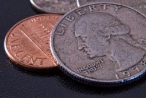

Hello there, my name is Daniella and I would like to introduce to you one of my hobbies as a casual coin collector. I have been collecting coins as early as 2001 - what drew me into this hobbie was the 50 State Coin Quarter program act which would release a set of five different state quarter coins each year; I was pretty much facinated by the idea of taking a whole nine years to complete the entire collection.
At first when I took on this challenge, I wans't sure if I would be able complete the collection but with the help of my older sister and my late grandmother I was able to complete the set each year and I got really into it. As I got really into it, I started to appreciate the art design in each of the coins, the little details, the story behind each of the coin and I just wanted to learn more...
I also started to be a little picky about the condition of the coins, and since I had my late grandmother and my older sister checking their changes here and there, I would exchange my quarters for their "prestine" condition quarters to upgrade my collection.
My older sister gifted me a hard cover folder specifically made for the 50 state quarter. It's a nice folder, there's some pros and cons with this particular folder though,.. the pros is that it holds the coins very well & it's sturdy, and it contains some cool fun facts, nicknames and mottos about each of state that I would have not otherwise know. Now, the downside of this folder is that it has extra slots for P and D quarters. Let me explain what this means, in the head of the quarter under "In God We Trust" there is a tiny letter mark - it's either a P for minted in Philadelphia or a D for minted in Denver and that totally threw me off back then; not only did I have to be on a lookout for the new set each year but I also had to look for the P and D print in the coins as well and to this day I still don't have it fully "complete" (I do have the whole 50 State quarters, it's just not filled in this particular folder due to P and D mark).
Once I finished collecting the 50 state quarter collection which was around late 2009, I started searching for the District of Columbia and U.S. Territories quarters which is a set of 6 coins, piece of cake? NOPE! Till this day, I'm still 5/6 missing American Samoa quarter, the struggle is real!
I also started the America the Beautiful quarter chase in late 2010 which in my opinion is one of the best quarter program. I love going on camping trips and I've been to a few of the national parks featured in this program so that's pretty cool.
My late grandmother has gifted me a few JFK half dollar coins and also a few Native American $1 coins that she got as change buying produce in Chinatown which I will always cherish (I miss her so much). This has resulted me in joining another coin chase which didn't really go well - The Presidential $1 coin program. My older sister really helped me out with this one, back then she would invite me to travel across the country (all expenses paid by her) and I pretty much got pretty much about 80% of my presidential coins during my trips to NYC, Boston, Portland and Orlando - I found most these coins at the airports public transfer ticket machine as change, pretty neat!
At like late 2012, I got really burned out and frustrated searching for the 2010, 2011, and 2012 set with no success of finding any at different airports, cities, locations etc... so I stopped investing a lot of my time into searching for these presidential coins - I know it would be a lot easier to just "buy" the set online, there were times where I really thought about it but it didn't feel right for me to purchase coin sets because my entire coin collection came from acquiring through changes and trading with my late grandmother, my older sister, sometimes my other sisters and my parents.
This is pretty much how I started collecting coins.
How to get started
If you're interested in learning more about collecting coins and would like to give it a try.
I think the best way to get it started is simply by opening your coin pouch if you have one or check your pockets?! Hah, in all seriousness, you could start by checking out the US Mint website which offers a tons of information about the coin programs, schedules, etc...; and from there you can decide which program you would like to start chasing. There are also option to purchase the coin sets which I don't recommend doing it, specially if you're just starting out. I personally use the US Mint webpage as a reference/resource to keep track of the schedule releases.
Once you get really into it, I think it's a good idea to invest on a coin album/folder - unfortunately, I cannot suggest a specific coin album/folder. As I feel everyone has different needs and tastes, so my best advice is to do your own research by checking out reviews from other users on amazon or YouTube and ultimately decide on your own what best suits your needs.
Resources
- Here's a link to amazon for a variety of coin folders/albums.
- I also found a video on YouTube of a coin collector talking about the basics of choosing a coin folder that could help you out.
Tips
- ALWAYS check your change when buying anything anywhere.
- Ask people around you to keep an eye out for a coin that you're collecting.